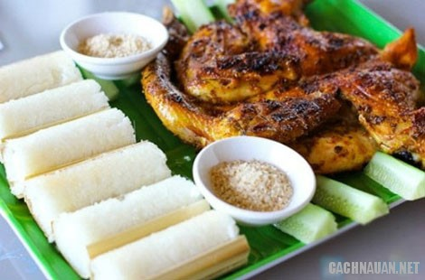
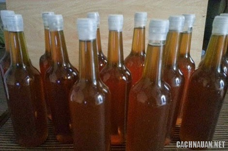
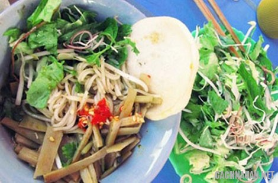
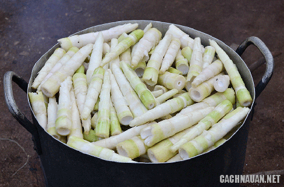
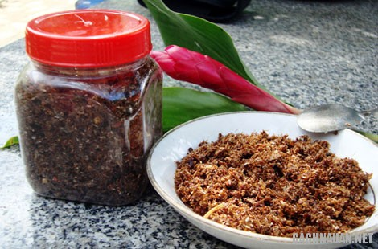

Du khách có dịp đến vùng đất Gia Lai sẽ không chỉ có cơ hội ngắm những cảnh đồi núi mênh mông bất tận,
hay tìm hiểu những phong tục tập quán của người dân nơi đây mà còn có cơ hội được thưởng thức những món
ăn đặc sản ngon lạ, hấp dẫn không nơi nào có được.
Ai đã đến Tây Nguyên nắng gió hẳn sẽ bị cuốn hút bởi vô vàn đặc sản nơi đây, từ thịt rừng thơm ngon đến các
món cây nhà lá vườn dân dã. Gia Lai, vùng đất đại ngàn hùng vĩ, cuốn hút du khách khắp nơi không chỉ bởi
không khí tuyệt vời sơn cước mà còn bởi văn hóa ẩm thực khác lạ, đậm chất Tây Nguyên hoang dã.
1. Cơm nướng ống (cơm lam)
Cơm nướng ống là cách gọi ở miền núi phía Bắc và sau này người Kinh áp dụng đối
với đồng bào Tây Nguyên. Món này còn được gọi là cơm lam, thường xuất hiện trong các bữa ăn ở vùng núi, đặc
biệt là Kon Tum, Gia Lai.

Cơm lam - thịt nướng
Cách làm món cơm này khá đơn giản, chỉ cần ống nứa (hoặc vầu, lồ ô) tươi có một đầu được bít lại, sau đó cho
gạo nương đã được ngâm vào. Người dân tiếp tục đổ nước, dùng lá dong hoặc lá chuối rừng nút chặt lại, đặt
lên bếp lửa cháy và chờ đến khi cơm chín. Người nướng phải khéo léo để cơm không sống hoặc bị nhão.
Cơm nướng ống khi chín sẽ được xếp ra gọn gàng và thực khách nên dùng ngay khi còn ấm nóng. Bạn chỉ cần tước
nứa ra thành nhiều phần, bẻ khúc cơm và chấm với muối sả lá é ớt rừng, hoặc dùng kèm với miếng thịt gà nướng
sẽ càng làm tăng hương vị của món cơm. Ngoài ra, thực khách cũng có thể ăn cơm nướng ống với muối đậu phộng
giã, thịt nướng các loại hoặc ăn không cũng có thể cảm được hương vị riêng của của món này.
2. Phở Khô (phở hai tô)
Cũng tại Gia Lai, du khách còn có thể tìm thử một món khác không kém phần đặc
trưng, đó chính là phở khô. Món này có tên gọi khác là phở hai tô, vì khi thưởng thức, thực khách sẽ được
phục vụ hai tô, gồm bánh phở và nước súp.
Bánh phở làm từ bột gạo cay, có sợi nhỏ, săn và mịn, khi trụng nóng sợi phở sẽ mềm dai. Bánh phở trụng phải
vừa ăn, dai, không nát, vón cục để khách dễ thêm tương nâu, xì dầu hoặc tương ớt.
Phở khô Gia Lai
Tô phở khô nhất định không thể thiếu thịt heo bằm nhỏ, gà xé sợi và hành khô phi giòn. Còn tô nước lèo gồm
nước ninh gà, thịt bò tái hoặc bò gân, bắp hay bò viên tùy khẩu vị mỗi người. Rau ăn kèm với phở khô là xà
lách, húng quế, giá trụng.
Khi thưởng thức phở khô, bạn sẽ chủ động gia giảm nêm trộn theo khẩu vị. Gắp một đũa phở cho vào miệng, bạn
sẽ cảm nhận được vị dai ngọt của sợi phở, thơm đậm đà của tương, giòn của giá và ngọt thanh của nước
lèo.
Du khách đến Gia Lai, có thể bắt gặp cơm nướng ống ở hầu hết bữa ăn cùng người dân địa phương. Còn đối với
phở khô, bạn có thể ăn ở quán trên đường Nguyễn Văn Trỗi. Giá một tô phở khoảng 25.000 đến 35.000 đồng.
3. Mật ong rừng Gia Lai
Thiên nhiên đã ban tặng cho Gia Lai một vùng đất màu mỡ mà bất kỳ loại cây nào
nơi đây cũng xanh tốt xum xuê. Mỗi mùa hoa cà phê hay mùa hoa cúc quỳ nở sẽ thu hút đàn ong tìm đến hút
mật.

Mật ong rừng
Mật ong ở Gia Lai có vị ngọt thanh, màu vàng sậm, người ta thường dùng mật ong như một vị thuốc trong đông
y. Màu vàng óng ánh trong suốt đặc quánh, độ kết dính cao, có mùi thơm có màu vàng nhạt trông rất trong.
Dùng một que tre sạch khuấy đều lên, nếu trong mật ong có trộn lẫn các chất khác thì bạn sẽ thấy màu đục
hiện lên, còn mật ong chính hiệu thì không có hiện tượng ấy.
4. Bún mắm cua
Đây là món ăn rất đặc biệt, ai chưa biết ăn khi ngửi mùi sẽ có cảm giác lạ. Nhưng
khi đã biết ăn rồi thì nó trở thành món ăn không thể nào quên được. Để có một bát bún mắm cua ngon, người
làm cũng hết sức kỳ công mới chế biến ra được món ăn này.

Bún mắm cua - kèm rau sống tươi rói
Nguyên liệu để tạo ra món bún mắm cua rất đa dạng: cua đồng, bún, thịt ba chỉ, măng, chả hoặc nem, da lợn
chiên giòn, bánh phồng tôm, các loại gia vị ớt, mắm nêm, rau ăn kèm như: giá, bắp chuối, xà lách, ngổ, kinh
giới, rau thơm… Cua đồng là một thành phần quan trọng, chủ đạo của món ăn này nên người bán thường lựa chọn
cua rất kỹ. Theo kinh nghiệm của người dân, vào mùa mưa, cua đồng sẽ nhiều, thịt cua ngọt và chắc hơn mùa
khô.
Bún mắm cua khá kén người ăn bởi mùi vị đặc trưng của nó. Không phải ai cũng có thể chịu được mùi nồng nồng
của mắm nguyên chất và nước cua lên men. Bún cua có vị mặn của mắm, vị thơm các loại rau, vị nồng đặc trưng
của bún mắm, vị cay của ớt, âm thanh giòn rụm của da lợn… tất cả hòa quyện nhau tạo nên món ăn rất hấp dẫn
và ngon miệng.
5. Măng chua rừng
Trong những miếng ngon của rừng, măng chua cũng là một món ăn khoái khẩu của đồng
bào dân tộc. Măng tươi giã dập với ớt rồi đem ủ trong chộ sành, khoảng hai tuần sau, măng chua đến độ vừa
dùng. Miếng măng giòn tan, cả nước lẫn cái đều có vị chua, cay, đắng, ngọt. Măng chua nấu với cá trê, măng
chua nấu gà khiến bạn ăn quên no…

Bún mắm cua - kèm rau sống tươi rói
Khoảng tháng 5 Âm lịch, mùa mưa bắt đầu cũng là lúc rừng le cho những búp măng non ngon ngọt. Măng sau khi
hái về thái mỏng, phơi nắng hoặc sấy lò, làm thành món đặc sản không phải ở đâu cũng có được.
Trong tất cả các loại măng thì măng le được ưa chuộng nhất bởi đặc ruột, lại ngọt, bùi, không có vị đắng,
lúc tươi thì vị mát lành, khi phơi khô lại có độ giòn dai. Và cũng chỉ có măng khô làm tại Gia Lai mới được
nhiều thực khách ưa chuộng
6. Muối kiến vàng
Loại muối độc nhất vô nhị – món ngon Gia Lai, làm từ loại kiến vàng rừng vùng
Ayun Pa, Krông Pa (Gia Lai) có thể khiến nhiều người lắc đầu nguầy nguậy khi nhìn. Nhưng nếu đã nếm qua
hương vị hoang sơ này một lần thôi, sẽ hiểu vì sao, lên Gia Lai, nhất định mua muối kiến vàng về làm quà
hoặc ăn dần.

Bún mắm cua - kèm rau sống tươi rói
Để làm món này, người dân phải đi tìm bắt kiến vàng, loài sống sâu trong rừng. Sau đó, đem rang sơ, rồi đem
giã với ớt cay thật cay, cộng thêm vài loại lá rừng, muối hột, thế mà thành một thứ chấm thịt nướng tuyệt
vời.
Vị mặn riêng của kiến cùng với axit trong bụng chúng chua chua như muối và chanh kết hợp cái cay ớt, hăng
hăng của thân kiến và nhiều lá lạ, rất cuốn hút.